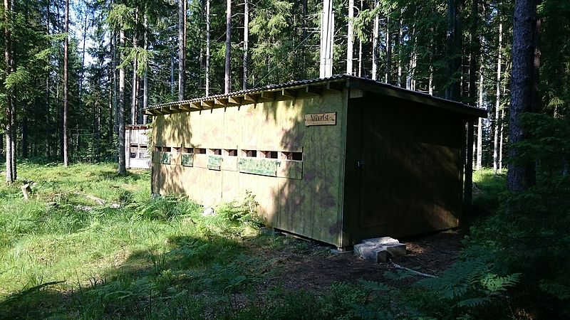
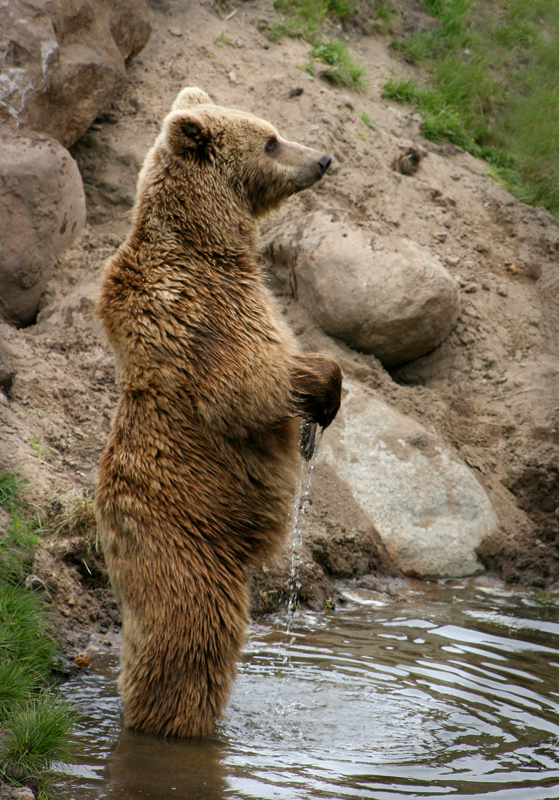
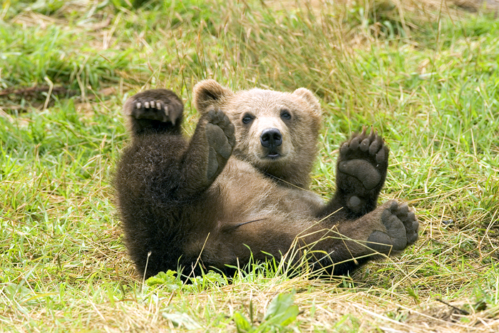
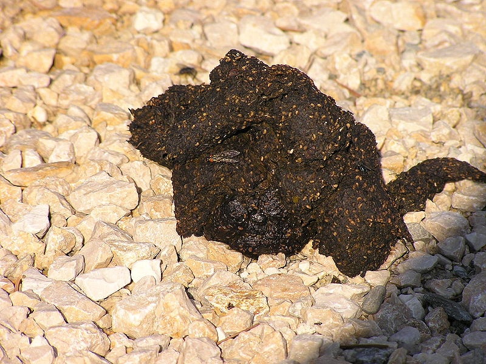

Sisukord
Loomaliik
Levik
Välimus ja kehaehitus
Fotod
Tagasi avalehele
Loomaliik
 Karu ehk pruunkaru (Ursus arctos) on karulaste sugukonda karu perekonda kuuluv loomaliik. 2022. aastal valiti karu aasta loomaks.
Pruunkaru on suurim Eestis elav kiskjaline ja suurim Euroopa mandriosas elav kiskjaline. Toitumiselt on karu kõigesööja ja valdava osa toidust moodustavad mitmesugused marjad, seened, seemned ja putukad.
Laia levila tõttu eristatakse mitmeid pruunkaru alamliike, mis erinevad näiteks kasvu, kolju kuju, karvkatte värvuse ja mitme muu morfoloogilise tunnuse poolest.
Karu ehk pruunkaru (Ursus arctos) on karulaste sugukonda karu perekonda kuuluv loomaliik. 2022. aastal valiti karu aasta loomaks.
Pruunkaru on suurim Eestis elav kiskjaline ja suurim Euroopa mandriosas elav kiskjaline. Toitumiselt on karu kõigesööja ja valdava osa toidust moodustavad mitmesugused marjad, seened, seemned ja putukad.
Laia levila tõttu eristatakse mitmeid pruunkaru alamliike, mis erinevad näiteks kasvu, kolju kuju, karvkatte värvuse ja mitme muu morfoloogilise tunnuse poolest.
Levik
Pruunkaru oli algselt levinud suures osas Põhja-Ameerikast, Euraasiast ja Põhja-Aafrikast. Nad elasid kogu Põhja-Ameerikas lääne- ja keskosas kuni Hudsoni lahe laiuskraadini põhjas ja Mehhiko põhjaosani lõunas. Euraasias elasid nad Lääne-Euroopast kuni Siberi idarannikuni ja Himaalajani; nad puudusid ainult Ees-Indias ja Kagu-Aasias. Aafrikas elasid nad Atlase mägedes.
Küttimise ja elupaikade hävitamise tõttu on pruunkaru levila ahenenud. Paljudes piirkondades on ta välja surnud. Näiteks Suurbritannias suri karu välja 10. sajandil, Saksamaal ja Põhja-Aafrikas Atlase mäestikus 19. sajandil, Mehhikos ja suures osas USA-st 20. sajandil.
Lääne- ja Kesk-Euroopas on alles ainult jäänukasurkonnad, samuti USA põhiosas, kus nad elavad ainult loodes. Ka Edela-Aasias ning osas Põhja- ja Ida-Euroopast on nende arv tunduvalt vähenenud. Suured asurkonnad on säilinud Alaskas, Lääne-Kanadas ja Põhja-Aasias.
Eriti ohustatud asurkondade suurendamiseks püütakse asustada ümber karusid teistest piirkondadest.
Pruunkarude koguarv maailmas on hinnanguliselt 185 000 - 200 000.
Andmed karude arvu kohta konkreetsetes riikides on jämedad hinnangud, sest karud rändavad üle riigipiiride.

Levik Eestis
Karu on levinud kõikjal Mandri-Eestis. 2009. aastal hinnati karude arvuks vähemalt 700 isendit, neist vähemalt 140 on täiskasvanud emakarud. 2015. aasta seisuga pole nende arvukus oluliselt muutunud. 2020. aasta suvel oli karu üldarvukus vahemikus 900-950, varakevadel aga kuni 1000. Karu asurkonna seisundit võib pidada väga heaks
Välimus ja kehaehitus
Nagu kõigil karulastel, on pruunkarul tugev, jõuline kehaehitus. Reeglina on nende luustik tugevam kui teistel karulastel. Nagu teistelgi karulastel, on pruunkarul peeniseluu ja lühike juppsaba. Pruunkarule eriomane tunnus on lihaskühm õlgade kohal, mis annab esijalgadele lisajõudu.
Pea ja kael
Nagu kõigil karulastel, on pruunkarul raske, massiivne pea esileulatuva koonuga. Võrreldes sageli sama värvi baribaliga on laup märgatavalt kõrgem ja koon nõgusalt võlvitud. Kõrvad on eemalseisvad ja ümarad, silmad väga väikesed. Kukal on lühem kui jääkarul. Kael pöördub hästi.
Hambad ja seedeelundid
Pruunkaru jäävhambad koosnevad 42 hambast. Hambavalem on 3/3-1/1-4/4-2/3: ülalõual on kummalgi kolm lõikehammast, üks silmahammas, neli eespurihammast ja kaks purihammast; alalõua hammastik erineb selle poolest, et purihambaid on kaks. Nagu paljudel kiskjalistel, on neil suurenenud silmahambad. Purihammastel on taimetoidulistele omased laiad, lamedad kroonid. Nagu kõigil kiskjalistel, on pruunkaru seedeelundkond lihtsa ehitusega. Magu on ühe valendikuga. Pimesool puudub. Sool on 7-10 m pikkune, seega pikem kui puhtlihatoidulistel kiskjalistel.
Karvastik
Pruunkaru karvastik on tavaliselt tumepruun, kuid sel võib olla palju värvivarjundeid: võimalikud toonid ulatuvad kollakas- ja hallikaspruunist ja teistest pruuni varjunditest peaaegu mustani. Kaljumäestikus karudel on karvastiku ülaosa sageli valkjashallide tähnidega (inglise keeles grizzly), mistõttu seda alamliiki nimetatakse grisliks (Ursus horribilis).
Pruunkarul on üldiselt tihe aluskarv, pealiskarvad on pikad.
Karvastik muutub vastavalt aastaaegadele. Talvekarv on tihe ja kare ning tundub tokerjana.
Fotod



Ülesse
Tagasi avalehele